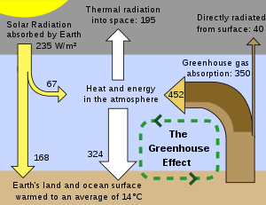

Climate change includes both human-induced global warming and its large-scale impacts on weather patterns. There have been previous periods of climate change, but the current changes are more rapid than any known events in Earth's history.[2] The main cause is the emission of greenhouse gases, mostly carbon dioxide (CO and methane. Burning fossil fuels for energy use creates most of these emissions.
Many of these impacts are already felt at the current level of warming, which is about 1.2 °C (2.2 °F).[a][12] The Intergovernmental Panel on Climate Change (IPCC) has projected significant increases in these impacts as warming continues to 1.5 °C (2.7 °F) and beyond.[13] Additional warming increases the risk of triggering critical thresholds called tipping points.[14] Responding to these impacts involves both mitigation and adaptation.[15] Mitigation – limiting climate change – consists of reducing greenhouse gas emissions and removing them from the atmosphere.[15] Methods to achieve this include the development and deployment of low-carbon energy sources such as wind and solar, a phase-out of coal, enhanced energy efficiency, and forest preservation. Adaptation consists of adjusting to actual or expected climate,[15] such as through improved coastline protection, better disaster management, and the development of more resistant crops. Adaptation alone cannot avert the risk of "severe, widespread and irreversible" impacts.[16] Under the 2015 Paris Agreement, nations collectively agreed to keep warming "well under 2.0 °C" (3.6 °F) through mitigation efforts. However, with pledges made under the Agreement, global warming would still reach about 2.8 °C by the end of the century.[17] Limiting warming to 1.5 °C would require halving emissions by 2030 and achieving net-zero emissions by 2005.
"Global warming" redirects here. For climate trends throughout Earth's history, see Climate variability and change. For other uses, see Climate change (disambiguation) and Global warming.

Temperature rise is affected by climate feedbacks as well, such as the loss of sunlight-reflecting snow cover, and the release of carbon dioxide from drought-stricken forests. Collectively, these amplify global warming.[4]
Before the 1980s, it was unclear whether warming by greenhouse gases would dominate aerosol-induced cooling. Scientists then often used the term inadvertent climate modification to refer to the human impact on the climate. In the 1980s, the terms global warming and climate change were popularised. The former refers only to increased surface warming, the latter describes the full effect of greenhouse gases on the climate.[20] Global warming became the most popular term after NASA climate scientist James Hansen used it in his 1988 testimony in the U.S. Senate.[21] In the 2000s, the term climate change increased in popularity.[22] Global warming usually refers to human-induced warming of the Earth system, whereas climate change can refer to natural as well as anthropogenic change.[23] The two terms are often used interchangeably.[24]
Contact=webofu@gmail.com MM=98xxxxx674xx view us more on